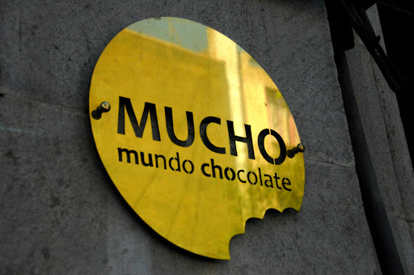
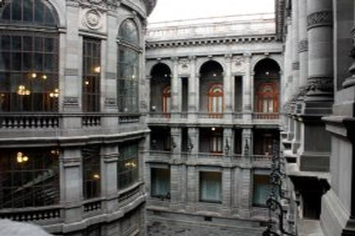
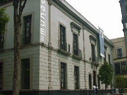
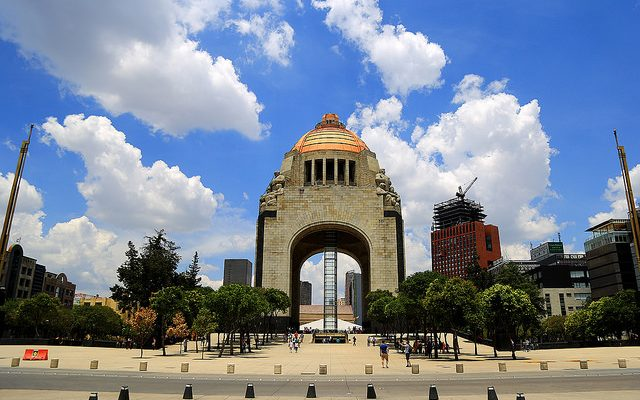
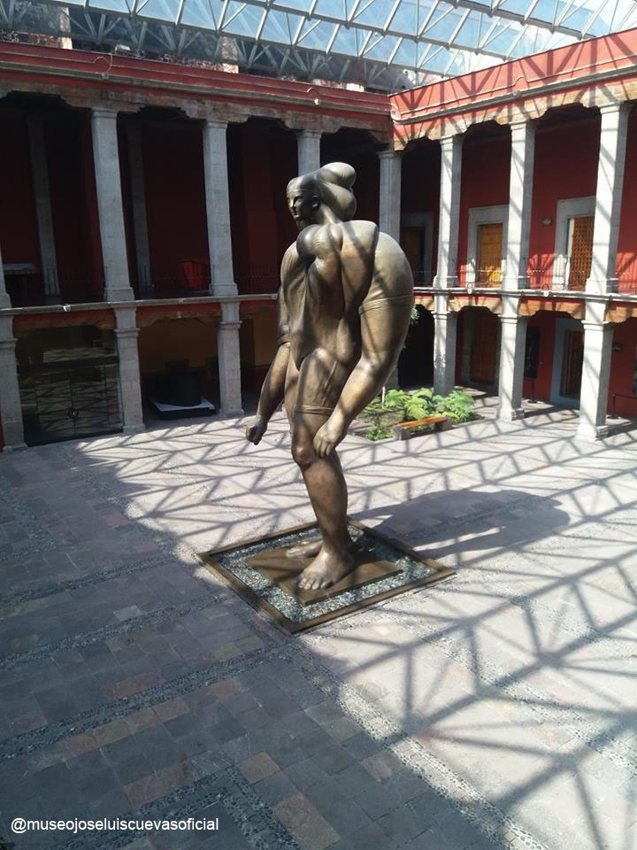
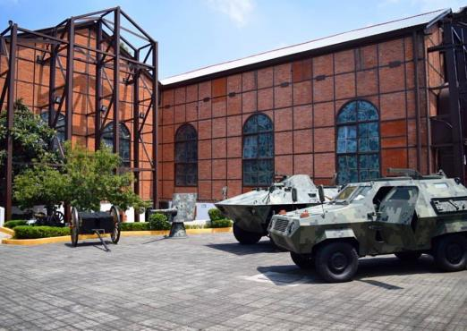
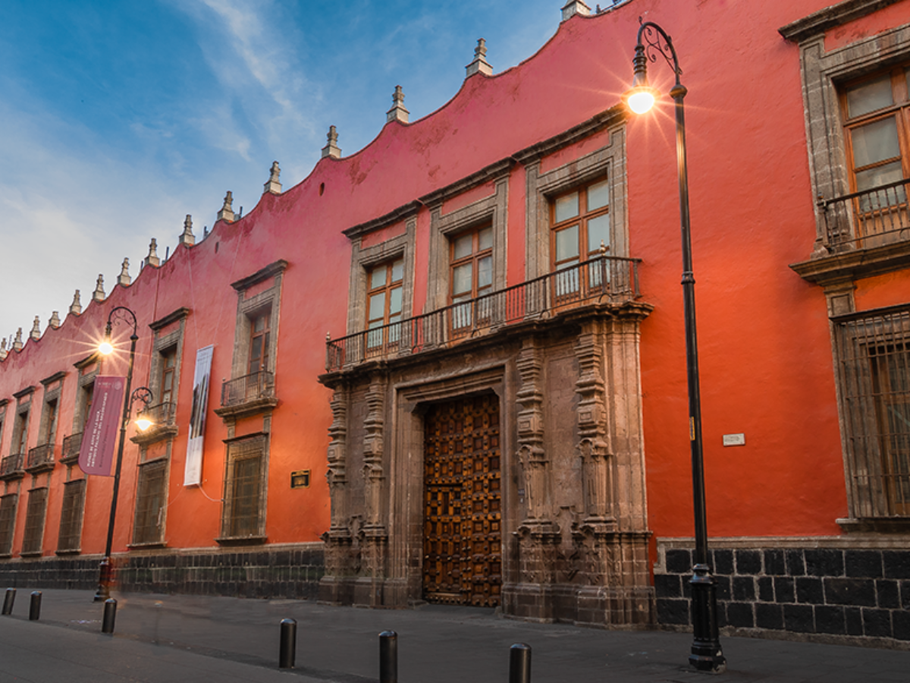

Museos en la Alcaldía Cuauhtémoc
En esta alcaldia ubicaremos un total de 85 museos, siendo esta alcáldia con mas recintos en la CDMX de entre ellos destacan los siguientes museos.

Mundo Chocolate Museo (MUCHO)
Horarios y costos
Abierto al público de lunes a domingo de 11:00 a 16 hrs.
Entrada general: $75
Niños, estudiantes y adultos mayores: $50
Fundación MUCHO, A.C.
Milán 45
Col. Juárez
CP 06600
Cuauhtémoc, Cuauhtémoc, Ciudad de México
Tels.: 55 5514 1737, 55 5207 1467

Museo Nacional de Arte (MUNAL)
Horarios y costos
Martes a domingo de 10:00 a 18:00 hrs.
Admisión general $70
Entrada gratuita a Amigos Munal, menores de 13 años, personas con discapacidad, estudiantes, maestros y adultos mayores presentando credencial vigente, aplica únicamente para nacionales ICOM: 50%
Permiso para toma de fotografías (sin flash y sin tripié) $5
Permiso para toma de video (sin tripié y sin iluminación) $30
Secretaría de Cultura/INBA
Tacuba 8
Centro Histórico
CP 06010
Cuauhtémoc, Cuauhtémoc, Ciudad de México
Tels.: (55) 8647 5430 ext. 5035

Museo Nacional de la Estampa (MUNAE)
Horarios y costos
Martes a domingo de 10:00 a 18:00 hrs.
Entrada general: $55.00
Entrada gratuita con credencial de estudiante, profesor e INAPAM
Domingos entrada libre.
Secretaría de Cultura/INBA
Av. Hidalgo 39, Plaza de la Santa Veracruz
Centro
CP 06050
Cuauhtémoc, Cuauhtémoc, Ciudad de México
Tels.: 55 8647 5220 exts. 5440, 5443

Museo Nacional de la Revolución
Horarios y costos
Abierto al público de martes a viernes de 9 a 17 hrs.
sábado y domingo de 9 a 19 hrs.
Entrada general: $34
50% de descuento al presentar credencial vigente de estudiante, maestro e INAPAM
Domingos entrada libre
Secretaría de Cultura de la Ciudad de México
Plaza de la República s/n
Col. Tabacalera
CP 06030
Cuauhtémoc, Cuauhtémoc, Ciudad de México
Tels.: 55 5546 2115, 55 5566 1902

Museo José Luis Cuevas
Horarios y costos
Abierto al público de martes a domingo de 9:30 a 17:30
Entrada general: $30
50% de descuento a maestros y estudiantes con credencial
Entrada libre a afiliados al INAPAM con credencial
Domingos entrada libre al público en general.
Fundación Maestro José Luis Cuevas Novelo, A.C.
Academia 13
Centro Histórico
CP 06060
Cuauhtémoc, Cuauhtémoc, Ciudad de México
Tels.: 55 5542 8959, 5542 6198 ext. 101
Museo de Sitio del Templo Mayor
Horarios y costos
Martes a domingo de 9:00 a 17:00 hrs.,
Domingos entrada libre.
Entrada general: $80 Incluye entrada a la Zona Arqueológica
Maestros, estudiantes, niños menores de 13 años e INAPAM: entrada libre
La utilización de videocámara está sujeta al pago de derechos
Secretaría de Cultura/INAH
Seminario 8
Centro Histórico
CP 06060
Cuauhtémoc, Cuauhtémoc, Ciudad de México
Tels.: 55 4040 5600 exts. 412930, 412933

Museo del Ejército y Fuerza Aérea Mexicanos de Bethlemitas (Cerrado Temporalmente)
Horarios y costos
Abierto al público de martes a sábado de 10 a 18 hrs.,
domingos y días festivos de
10 a 16 hrs.
Entrada libre.
Secretaría de la Defensa Nacional
(SEDENA)
Filomeno Mata 6
Centro
CP 06060
Cuauhtémoc, Cuauhtémoc, Ciudad de México
Tels.: (55) 5512 3215, 5512 7586

Museo de la Luz
Horarios y costos
Martes a viernes de 9 a 17 hrs.
sábados y domingos de 10 a 17 hrs.
Entrada general: $35
Niños, maestros, estudiantes, miembros del INAPAM, trabajadores y exalumnos UNAM con credencial vigente: $25
Niños menores de 2 años: entrada libre
UNAM/Dirección General de Divulgación de la Ciencia
San Ildefonso 43
Centro Histórico
CP 06020
Cuauhtémoc, Cuauhtémoc, Ciudad de México
Tels.: 55 5702 4129, 55 5702 3195 ext. 101 y 102, 55 5702 3183 exts. 103 y 106, 55 2616 4837 ext. 103

Museo de Arte de la SHCP. Antiguo Palacio del Arzobispado
Horarios y costos
Martes a domingo
de 10:00 a 17:00 hrs.
Entrada libre
Secretaría de Hacienda y Crédito Público (SHCP)
Academia 13
Centro Histórico
CP 06060
Cuauhtémoc, Cuauhtémoc, Ciudad de México
Tels.: 55 5542 8959, 5542 6198 ext. 101
Museo Nacional de las Culturas del Mundo
Horarios y costos
Martes a domingo
de 10 a 17 hrs.
Entrada libre.
Secretaría de Cultura/INAH
Academia 13
Centro Histórico
CP 06060
Cuauhtémoc, Cuauhtémoc, Ciudad de México
Tels.: 55 5542 8959, 5542 6198 ext. 101